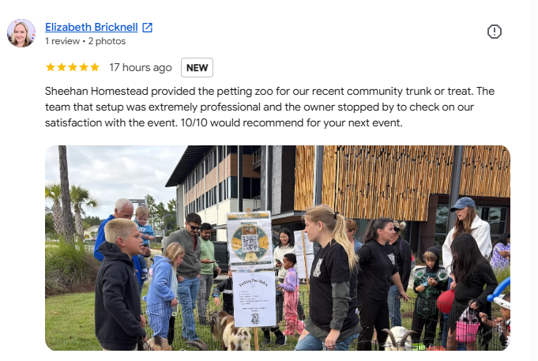
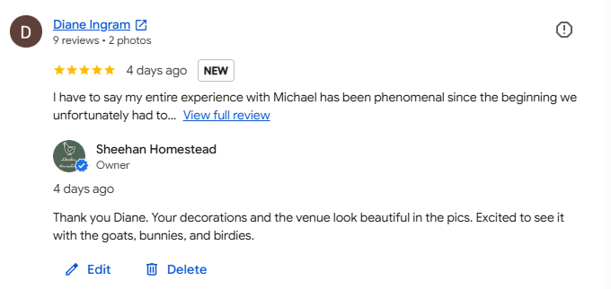
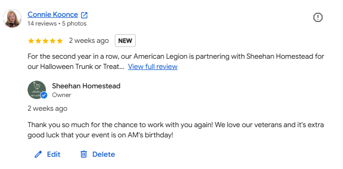
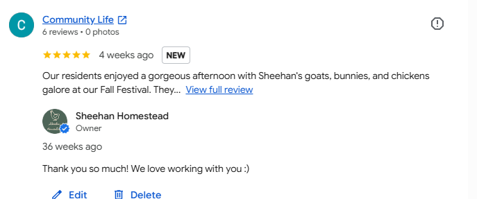
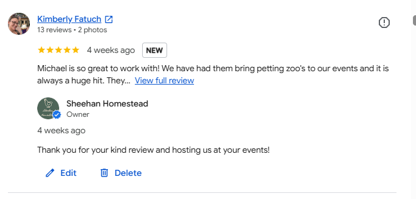
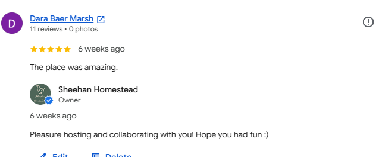
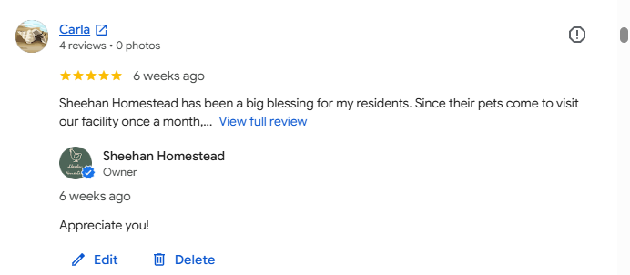
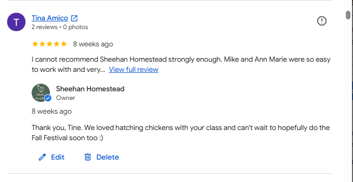
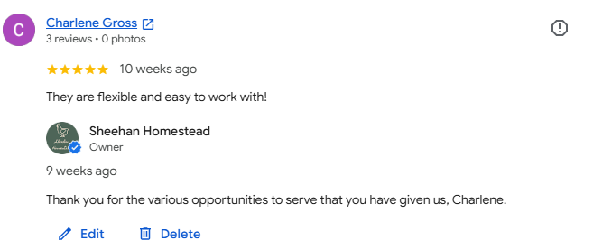

Said vs. did: the 2022 plan against what got built. Click to enlarge.
A2 · Full timeline
From capstone to number one.
Mar 2022
Homestead Retreats capstone presented (Executive MBA). Petting zoo and training already in the plan; franchising named as an exit.
Aug 2023
LLC formed.
Late 2023
First customer: a Montessori school (STEM on Call).
Jul–Aug 2024
First mobile petting zoo prototype.
2024 → 2025
Tax-return revenue about $18,000 (2024) → about $32,000 (2025).
Since then
100+ five-star Google reviews · almost 10,000 Facebook followers, 200k+ views in 28 days · Gold app and membership · Stead Spin prize wheel and 3D-printed QR membership cards · B2B wins with CDDs, country clubs, ELC Duval, Safariland and a PPEC · up to 8 gigs at once.
Last 14 months
About $72,000 booked from a standing start, with no ad spend.
Nov 2026
Number one in blind statewide and local searches (see the live demo).
A3 · Research notes & sources
Why I'm confident: it's been done.
What "tech-enabled" means
Altius Reach, Tech-Enabled Services, An Investable Middle. "Proprietary software to improve delivery leverage while retaining a meaningful human component." Also: an estimated 25–30% of tech-focused PE AUM is exposed to tech-enabled services.
Glacier Lake Partners, Selling a Tech-Enabled Services Business. 6–12x EBITDA for true tech-enabled services vs. 4–7x when positioned as traditional services; gross margin, recurrence and defensibility decide the frame.
Exit Ready Advisors, Distinguishing Real Tech Value. Observed premiums of 25%–75% in favorable markets (their own experience, not market data).
The UK framing
Franchise Brands plc, Annual Report 2025, Business Model: "Technology-enabled business." Nearly 600 franchise partners, £435m system sales. Strategic Report: Group-wide CRM (HubSpot) rolled out to all major businesses.
UK PE names the sector "tech-enabled services" and the roll-up "buy-and-build": Kingland Capital ("service businesses where technology lifts productivity, quality and scalability"), LDC.
Jacksonville market (locked facts, internal research files)
98 CDDs and stewardship districts in Clay, Duval, Nassau and St. Johns; 69 assumed to have amenities. Florida: 1,046 CDDs. Seven FY2026 adopted special-events budget lines: median $40,000. Named Jax working list: 7,616 organizations, 5,000 contactable. Source: TAM research file, Nov 2026.
Jacksonville: about 1.8 million people; largest city by land area in the contiguous U.S. Source: recording-kit market slide.
Michael's estimates (not a census)
About 3,000–4,000 Jacksonville-area organizations with event budgets. 5–10% penetration. Roughly 150–400 accounts at those rates (estimate math).
A4 · Investor-proof reviews
Fifteen five-star reviews from institutions.

Wildlight community eventCDD

Landscape company eventCorporate / venue

American Legion trunk or treatVeterans org · repeat

Amelia Island PlantationResort community

RiverTownHOA management

Homeschool group farm visitEducation

Cypress VillageSenior living · monthly

Faith school science classSchool / STEM

Early Learning Coalition of DuvalEarly learning · repeat
Click any chart to enlarge. Every figure is tagged on the chart: sourced, owner estimate, model or scenario. Not an appraisal, not an offer to sell securities.
“Tech-enabled services use proprietary software to improve delivery leverage while retaining a meaningful human component.”
The test
“Not whether a company uses technology, but whether that technology creates measurable operating leverage, strengthens workflow control and generates data that improves delivery over time.”
Why it matters
They report an estimated 25–30% of tech-focused PE assets are already exposed to tech-enabled services.
“It uses proprietary technology… to deliver services that compete on efficiency, accuracy, or scale advantages that purely manual competitors cannot match.”
The frame
“Presented as a services business that uses technology to operate more efficiently, it receives a services multiple. Presented as a technology platform… it can receive a software-adjacent multiple.”
Their examples
Logistics brokerages with routing software, field-service businesses on custom dispatch platforms, compliance providers with automated monitoring.
Business model, Annual Report 2025: “Technology-enabled business: We use technology to enhance the natural operational gearing of our franchise business.” Nearly 600 franchise partners, £435m system sales.
UK private equity
“Tech-enabled services” is a named sector: “Service businesses where technology lifts productivity, quality and scalability.” (Kingland Capital). LDC lists “a wide spectrum of tech-enabled services.”
The playbook
UK PE calls the roll-up buy-and-build: buy a platform, add the businesses down the street, run them on one system.
The world's largest home-services franchisor at the time of the deal: 28 brands, more than 4,800 franchises, 10 million+ customers. Plumbing, HVAC, cleaning, pest control and more.
The tech edge
KKR: “bringing together adjacent services under a diversified and tech-enabled platform.” Online platforms connect consumers to vetted local providers.
The outcome
KKR agreed to acquire it from Harvest Partners in July 2021 (terms not disclosed). Franchise Times reported system sales had doubled to $3 billion in about three years under Harvest.
Our parallel
Adjacent services under one brand and one platform: petting zoos, STEM, goat yoga, farm visits, memberships.
A London-listed international multi-brand franchisor with nearly 600 franchise partners and £435m system sales (Annual Report 2025).
The tech edge
Names itself a “technology-enabled business.” Group-wide One CRM (HubSpot) rolled out to all major businesses in 2025, plus One finance system (NetSuite), to give the group and its franchise partners real-time sales insight.
The outcome
Scale and diversification across brands on shared systems. No multiple quoted here.
Our parallel
We run HubSpot too, ready for about 3,000 B2B contacts. Same system, earlier stage.
The world's largest online marketplace for pet care, founded 2011 in Seattle. Pet sitting, boarding, dog walking and daycare, delivered by people.
The tech edge
The service is human; the platform is software. Its CEO told GeekWire the pet industry “was a laggard for a decade in terms of tech adoption, and a large chunk of it is still highly fragmented.”
The outcome
Taken private by Blackstone funds in an all-cash deal valued at about $2.3 billion, closed February 27, 2024.
Our parallel
Animals, people and software, in a fragmented, low-tech category.
An AI-enabled roll-up backed by General Catalyst's Creation strategy. It buys services businesses, including HOA management.
The tech edge
One proprietary AI platform (Nexus) across every company it owns. GC reports top HOA managers reclaiming 65+ hours a month and a tenfold bigger new-customer pipeline.
The outcome
40 acquisitions in about two and a half years since GC's first investment in February 2024. No valuation quoted here.
Our parallel
HOAs and CDDs are our professional-programmer buyer. Venture money is already organizing that buyer's vendors.
premium in favorable markets, per one exit advisor's own experience.
What decides it: gross margin, revenue that repeats, and technology a competitor can't just staff up to copy. The premium shrinks for labor-heavy models with commodity tech.